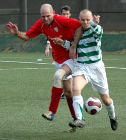
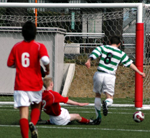
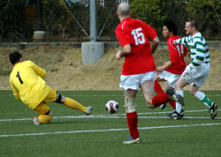

|
YC&AC, Sunday 15th February
BFC's chances of a third successive TML title took a battering when they blew a two-goal lead against the Kanto Celts. The hankies were out at the final whistle.
TEPI'S NET
Two goals to the good at halftime after two more poacher's goals from Day, two moments of silliness cost BFC two points, possession coughed up in midfield both times resulting in fierce shots raging into the back of Tepi's net.
In truth the Celts could have been 1-0 up before BFC had registered a shot in anger, Monohan blasting just wide with BFC's goalkeeper nowhere near it -- a let-off.
Meaty tackles flew in from both sides, nothing really nasty, but BFC's Aranda had the face on after being brushed from behind and took his time to shake the sulks.
But when he did, the Paraguayan for once did the simple thing, switching play to release Doyle, who charged down the right to fizz in a cross. Clarke put down his GameBoy to get his head on it, the ball clipping the post and rolling along the line ... Cue the 'Leaping Salmon.'
Yes, there he was again, 'Groundhog' Day, swooping to slam the ball home from all of 30 centimetres -- 1-0 to BFC, arguably against the run of play.
No sooner had Day been untangled from the net than he was poking about again, like a sniffer dog at Bogota Airport, a shot from Clarke deflecting kindly into his path and the former BFC skipper sweeping the ball home to give the champions a 2-0 lead.
But for Day's double, BFC created little from wide areas and had little physical presence in attack, despite winning possession through Pomares and keeping it well through Evans, this week moving more freely without his Eskimo suit.
Celts were still unlucky to go into halftime 2-0 down and BFC knew they would come flying out of the blocks in the second half.
ACTION MAN
They did, but the manner of their first goal was a sickener from BFC's point of view, Aranda caught in possession and the ball swept into the path of McGill, who smashed a 20-metre shot into the top corner, which is a touch unfair, given the size of BFC's keeper.
To cough up possession once and give away a goal is bad enough. You guessed it. Trying to be too intricate on the left, BFC had their pockets picked again and Monohan took advantage with a carbon copy of his team's first goal to give the Celts a shock equaliser.
BFC could have, indeed should have, restored their lead but both Clarke and Keisuke went for glory, attempting shots from impossible angles with a striker wide open in the middle waiting for a simple tap-in. Both were quick to get an earful.
The memory of conceding two poor goals could have been erased in a flash but perhaps Hibernian's unselfishness going forward separates them this season. Day's prolific poaching apart, BFC have suffered from 'tunnel vision' this season.
Beat one man, beat two, by all means but failing to deliver, especially to players wide open has cost points -- and will continue to do so, unless we sort it out. Or Hibs inexplicably choke in the title run-in.
Rouven and Shosuke combined well down the left in the second half, pinging in a couple of dangerous balls, which, but for a couple of tight offside calls, might have resulted in goals.
Shosuke, who had one dazzling first-half run brought to an abrupt halt by a shuddering, but fair, tackle, whipped in another curling ball which fizzed just past the far post but those two moments of madness were always destined to come back to haunt BFC.
Lowes produced a little pink handkerchief after the game to dab his eyes -- hayfever season has officially arrived.
Report by Pinky and Dianne
|